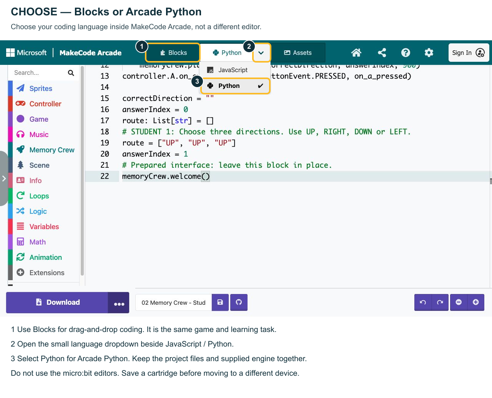
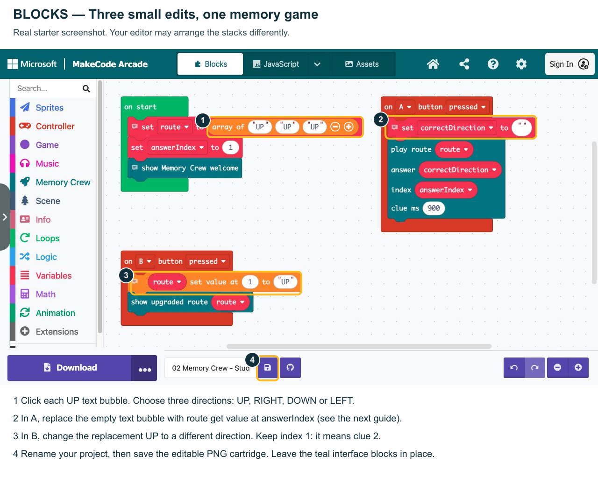
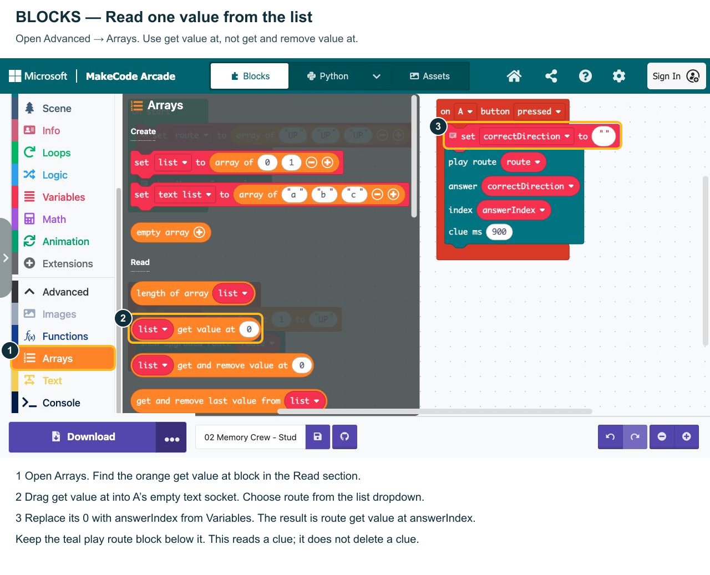
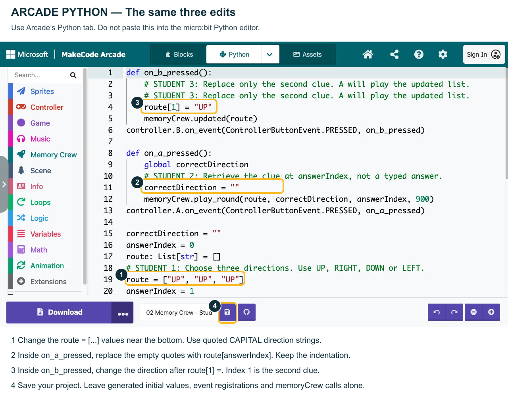
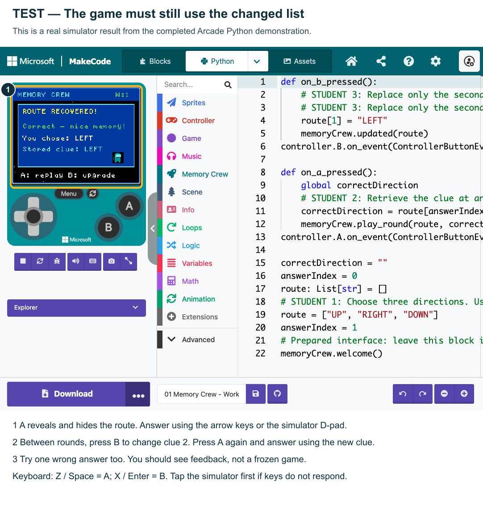

Memory Crew: Remember the Route
Repair a spaceship navigation game using an ordered list. Watch three clues, remember their order and recall one clue after the display hides it.
1. Open the right template
Play the working demonstration ↗Open the student starter ↗On the shared project page, choose Edit Code. Rename your copy. Use Blocks or open the dropdown beside JavaScript and choose Python. After your first conversion, Python also appears as a top tab.
This is MakeCode Arcade Python, not micro:bit Python or desktop Python. No micro:bit is needed. Both language choices use the same supplied game interface.
Import instead: open Arcade → Import → Import File → select a file from projects/. The small project PNGs contain editable code. Do not resize them.
Choose your coding language

2. Play once before editing
- Press A. Watch all three clues; wait until they disappear.
- The game asks for clue 2. Press its direction on the D-pad or keyboard arrows.
- In the demonstration, the original route is UP, RIGHT, DOWN. RIGHT should succeed.
- Between rounds, press B. Clue 2 changes to LEFT. Press A again; LEFT should now succeed.
Keyboard: Z / Space = A; X / Enter = B. Click/tap the simulator first. On a tablet, tap its A/B and direction controls.
The starter deliberately shows ENGINEER CHECK after revealing clues until you finish its answer expression. This is where your programming begins.
3. Blocks: choose, read, update

Use three directions, including at least two different directions. Indexes begin at 0: clue 1 → index 0; clue 2 → index 1; clue 3 → index 2.

Replace the entire empty text block in A, not just the characters inside it. Set the retrieval block’s list dropdown to route and its position input to the answerIndex variable. Keep the existing play route block connected below.
4. Arcade Python: the same job

Change the route = [...] assignment near the bottom. Inside on_a_pressed, use correctDirection = route[answerIndex]. Inside on_b_pressed, choose a new direction for route[1].
Keep indentation. Do not change the separate generated initial values above the route assignment, event registrations or memoryCrew calls. The final answerIndex = 1 selects clue 2.
Reference pattern from a different context: colours = ["RED", "BLUE", "GREEN"]; chosen = colours[1] retrieves BLUE; colours[1] = "GOLD" replaces it.
5. Test your repaired game

- Restart, press A and check that all three chosen clues appear in order.
- Answer clue 2 correctly. Confirm success and W increases.
- Play again and answer incorrectly. Confirm helpful feedback.
- Press B between rounds. Check only index 1 changes; press A and answer using the new value.
Success: your game still checks the correct answer after B changes the list. Do not hard-code a direction as the answer.
Go further: add a fourth/fifth clue; ask a different valid index; or reduce clue ms from 900 to 700. Change and test one feature at a time. Keep B’s update test.
6. Keep your work
Rename your project, then use the disk icon to save an editable PNG cartridge. Keep the original image file, not a screenshot of it. Browser autosave does not transfer your project to another device.
For this first lesson, leave the teal interface blocks and engine.ts unchanged. They handle the game display and feedback; you are practising list data, indexes and updates.
Five guides use real MakeCode screenshots, with annotation labels outside the code. Browser simulator tested in Blocks and Arcade Python. Physical Arcade hardware and physical iPads have not been tested.